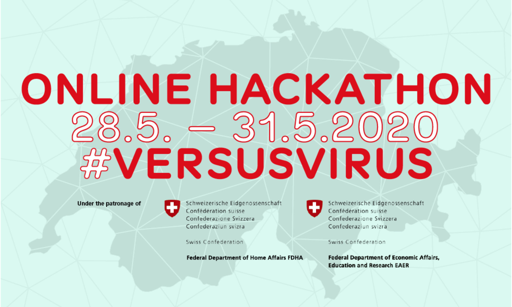

Ventures
Co-developing projects and organisations that promote social innovation.

Prototype Fund: A support program for interdisciplinary teams that strengthen democratic participation.

Data Café: An awareness campaign about the value and role of data in modern society.

Arui: A startup pursuing a sustainable future for flowers with dried flowers from local organic farmers.

VersusVirus: A national online Hackathon against the challenges caused by the Covid-19 pandemic.

Social Business Club: A student club at the University of St. Gallen that strengthens social awareness.

Digital Utopia Workshops: A workshop series that enables the imagination of positive digital futures.